1. 프로젝트 원가관리 프로세스
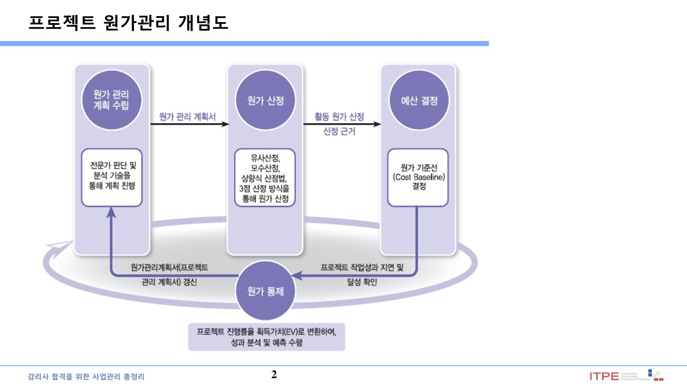
| 프로세스 | 내용·산출물 |
|---|---|
| 원가관리 계획수립 | 산정 단위·정밀도·통제 한계선(Threshold)·측정 규칙 정의 → 원가관리 계획서 |
| 원가 산정(Estimate Costs) | 활동별 소요 비용 추정 → 원가 산정치, 산정 근거(Basis of Estimates) |
| 예산 결정(Determine Budget) | 산정치 합산 → 원가 기준선(Cost Baseline), 자금요구사항 |
| 원가 통제(Control Costs) | 실적 대비 감시·변경 통제(EVM 활용) |
프로세스별 상세 설명
② 원가 산정(Estimate Costs): 프로젝트 활동을 완료하는 데 필요한 금전적 자원의 근사치(approximation)를 개발하는 프로세스. 주요 목적은 프로젝트 완료에 필요한 원가 총량을 결정하는 것이다.
③ 예산 결정(Determine Budget): 개별 활동·작업 패키지의 산정 원가를 수집·합산하여 승인된 원가 기준선(Cost Baseline)을 만드는 프로세스. 주요 목적은 프로젝트 성과가 감시·통제되도록 원가 기준선을 확립하는 것이다.
④ 원가 통제(Control Costs): 프로젝트 상태를 감시하여 원가를 갱신하고 원가 기준선의 변경을 관리하는 프로세스. 주요 혜택은 계획으로부터의 차이(Variance)를 인식하여 시정 조치를 취하고 위험을 최소화하는 방법을 제공하는 것이다.
▸ 원본 p.4 표 복원: 원가 관리 계획 수립
| 입력물(Input) | 도구 및 기법(Tool & Technique) | 산출물(Output) |
|---|---|---|
| 프로젝트 관리 계획서 (Project management plan) 프로젝트 승인서 (Project Charter) 기업환경요인(EEF) 조직 프로세스 자산(OPA | 전문가 판단(Expert Judgment) 분석 기술(Analytical techniques) 회의(Meeting) | 원가 관리 계획서 (Cost Management Plan) |
2. 원가 산정(Estimate Costs)
| 기법 | 설명 | 장·단점 |
|---|---|---|
| 유사 산정 (Analogous) | 과거 유사 프로젝트의 실제 원가를 기준으로 현재 프로젝트 원가를 추정하는 하향식(Top-down) 기법. 전문가 판단과 과거 이력정보를 활용한다. 프로젝트 초기 등 정보가 부족할 때 개략 산정에 사용. | 장: 빠르고 비용 저렴 / 단: 정확도 낮음(프로젝트 유사성에 의존) |
| 모수 산정 (Parametric) | 단위당 비용 × 물량 같은 통계적·수학적 관계(모수)를 이용해 산정. 예) 코드 1KLOC당 비용, 면적당 단가. 이력자료의 신뢰도가 높을수록 정확. | 장: 규모가 크고 데이터가 정확하면 신뢰도↑ / 단: 모형·모수가 부정확하면 오차 |
| 상향식 산정 (Bottom-up) | WBS 최하위(작업 패키지·활동)별로 개별 산정한 뒤 상위로 합산하는 기법. 작업을 세분할수록 정밀. | 장: 가장 정확 / 단: 시간·비용·노력 많이 소요 |
| 3점 산정 (Three-point/PERT) | 불확실성을 반영해 낙관치(O)·최빈치(M)·비관치(P) 3개로 추정. 베타분포 기대값 (O + 4M + P)/6, 삼각분포 (O+M+P)/3. 표준편차=(P−O)/6. | 장: 위험·불확실성 반영 / 단: 3개 값 추정 필요 |
| 예비 분석 (Reserve) | 식별 위험 대비 우발 예비, 미식별 위험 대비 관리 예비를 산정에 반영. | - |
| 기타 | 전문가 판단, 품질비용(COQ), 프로젝트관리 소프트웨어, 입찰정보 분석 등 | - |
▸ 원본 p.8 표 복원: 원가 산정
| 입력물(Input) | 도구 및 기법(Tool & Technique) | 산출물(Output) |
|---|---|---|
| 원가 관리 계획서 (Cost Management plan) 인적 자원 관리 계획서 (Human resource management plan) 범위 기준선(Scope baseline) 프로젝트 일정(Project Schedule) 위험 관리대장(Risk Register) 기업환경요인(EEF) 조직 프로세스 자산(OPA) | 전문가 판단(Expert Judgment) 유사산정(Analogous estimating) 모수 산정(Parametric estimating) 상향식 산정(Bottom-up estimating) 3점 산정(Three-point estimating) 예비비 분석(Reserve analysis) 품질비용(Cost of quality) 프로젝트 관리 소프트웨어 (Project management Software) 판매자 입찰 분석 (Vendor bid analysis) 그룹 의사결정 기술 (Group decision-making Techniques) | 활동원가산정★ (Activity Cost Estimates) 산정 근거(Basis of estimates) ★ 프로젝트 문서 갱신 (Project documents updates) |
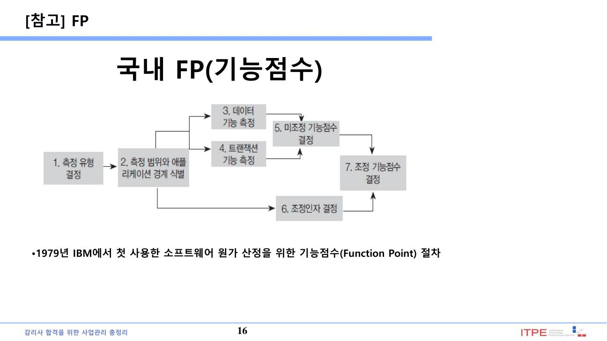
3. 예산 결정 · 예비비 ★★★
프로젝트 예산(Budget) = 원가 기준선 + 관리 예비
| 구분 | 대상 위험 | 포함 위치 | 승인 |
|---|---|---|---|
| 우발 예비 (Contingency Reserve) | 식별된(known-unknown) 위험 | 원가 기준선 내부 | PM 재량 |
| 관리 예비 (Management Reserve) | 미식별(unknown-unknown) 위험 | 원가 기준선 외부(총예산 내) | 경영진 승인 |
원가 기준선은 시간에 따라 누적된 승인 예산으로 S-곡선 형태를 가진다. 총액이 BAC(Budget At Completion)이다.
▸ 원본 p.18 표 복원: 예산 결정(Determine Budget)
| 입력물(Input) | 도구 및 기법(Tool & Technique) | 산출물(Output) |
|---|---|---|
| 원가 관리 계획서 (Cost Management plan) 범위 기준선(Scope baseline) 활동 원가 산정치 (Activity cost estimates) 산정 근거(Basis of estimates) 프로젝트 일정 (Project Schedule) 자원 달력(Resource calendars) 위험 관리대장 (Risk Register) 합약서(Agreements) 조직 프로세스 자산 (Organizational Process Assets) | 원가 수집(Cost aggregation) 예비 분석(Reserve analysis) 전문가 판단(Expert Judgment) 선례 관계(Historical relationships) 자금 한계 조정 (Funding limit reconciliation) | 원가기준선(Cost baseline)★ 프로젝트 자금 요구사항 (Project funding Requirements) 프로젝트 문서 갱신 (Project documents updates) |
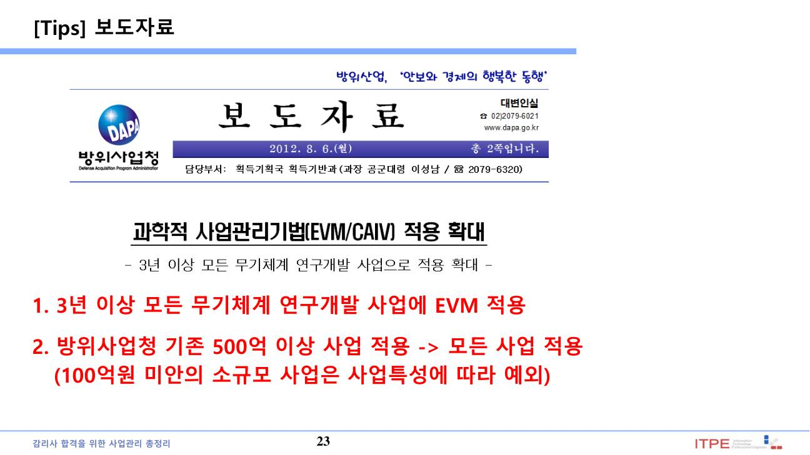
4. 원가 통제(Control Costs)
승인된 원가 기준선 대비 실제 원가를 감시하고 변경을 통제한다. 핵심 도구가 획득가치관리(EVM)이며, 성과 편차에 대해 시정/예방 조치를 권고한다.
▸ 원본 p.25 표 복원: 원가 통제(Control Costs)
| 입력물(Input) | 도구 및 기법(Tool & Technique) | 산출물(Output) |
|---|---|---|
| 프로젝트 관리 계획서 (Project management plan) 프로젝트 자금 요구사항 (Project funding Requirements) 작업 성과 데이터 (Work performance data) 조직 프로세스 자산 (OPA) | 획득가치관리 (Earned Value Management) | 작업 성과 정보 (Work performance Information) 원가 예측치(Cost Forecasts) 변경 요청서(Change requests) 프로젝트 관리 계획서 갱신 (Project management plan Updates) 프로젝트 문서 갱신 (Project documents updates) 조직 프로세스 자산 갱신 (OPA updates) |
5. 획득가치관리(EVM) – 기본값·차이·지수 ★★★
| 값 | 의미(예) |
|---|---|
| PV(계획가치) | 계획된 작업의 예산 (Planned Value) |
| EV(획득가치) | 완료된 작업의 예산가치 = 완료율 × BAC (예: 40% × 200MD) |
| AC(실제원가) | 수행 작업에 실제 투입된 비용 (Actual Cost) |
| BAC | 완료시점예산 (Budget At Completion) |
SPI = EV / PV (>1 양호, <1 지연) | CPI = EV / AC (>1 절감, <1 초과)
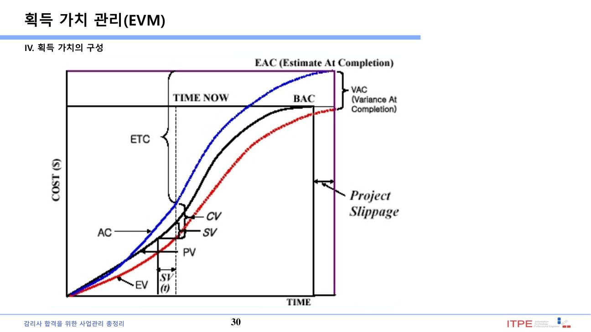
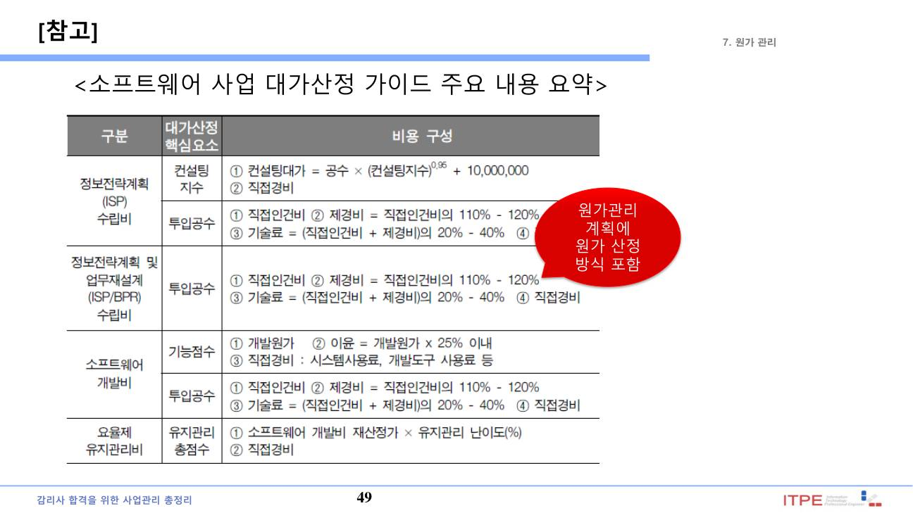
6. EVM 예측 – EAC · ETC · VAC · TCPI ★★★
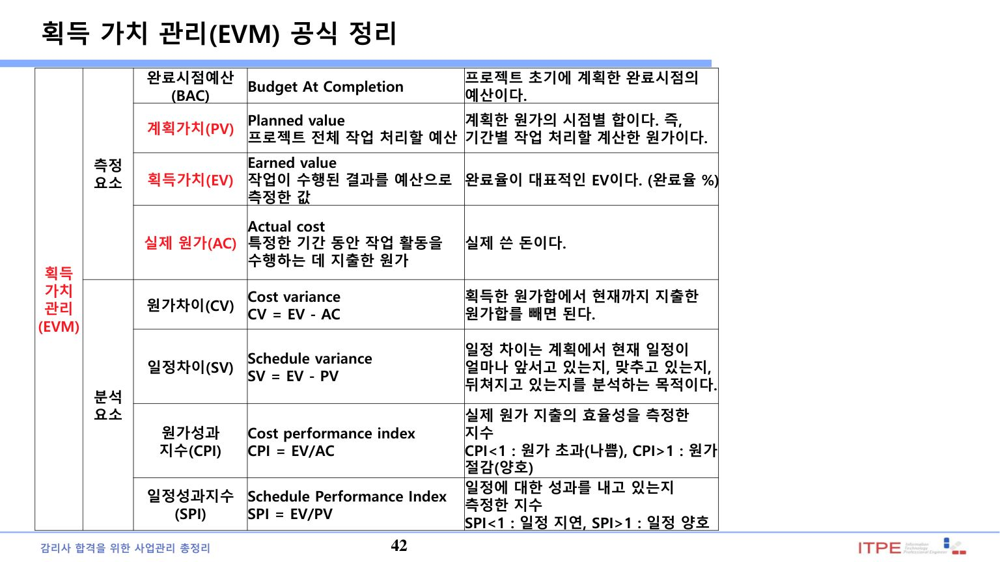
| 지표 | 공식 | 사용 상황 |
|---|---|---|
| ETC (잔여분 산정치) | ① BAC − EV ② (BAC − EV)/CPI | 완료까지 남은 예상 비용 |
| EAC (완료시점 예측) | AC + (BAC − EV) | 현재 편차가 일시적(잔여는 계획대로) |
| BAC / CPI | 현재 CPI 편차가 지속 | |
| AC + (BAC − EV)/(CPI × SPI) | 원가·일정 편차 모두 지속 | |
| VAC | BAC − EAC | 완료시점 예상 편차(양수 흑자, 음수 적자) |
| TCPI | (BAC − EV) / (BAC − AC) | 목표(BAC) 달성에 필요한 잔여 효율 |
7. EVM 계산 기출
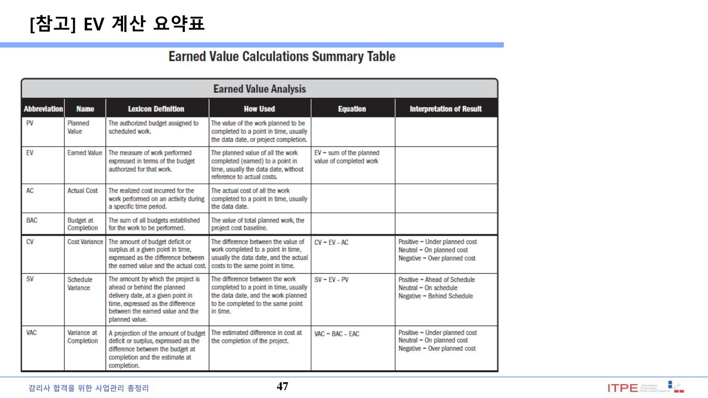
- 일정 차이(SV)는 금액 단위로 나오며, 프로젝트 종료 시점에는 항상 0으로 수렴(모든 계획 작업 완료)한다.
- ETC는 잔여 비용(이미 쓴 AC 미포함), EAC는 총 예상 비용(AC 포함).
- VAC 부호: 양수=예산 절감(흑자), 음수=예산 초과(적자).
8. 품질관리 소개
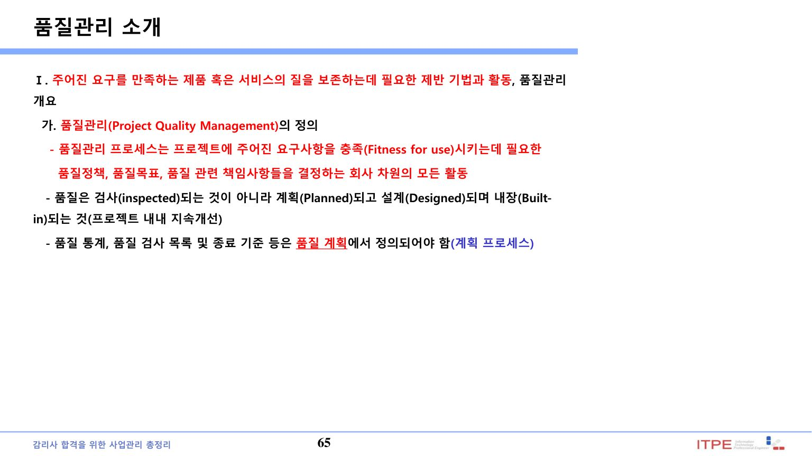
| 개념 | 내용 |
|---|---|
| 품질(Quality) | 기본 특성·기능이 요구사항을 충족하는 수준. 낮으면 항상 문제 |
| 등급(Grade) | 동일 용도지만 기술적 특성이 다른 항목의 구분. 낮은 등급은 의도적이면 문제 아님 |
| 정확성 vs 정밀성 | 정확성(Accuracy): 참값 근접 / 정밀성(Precision): 반복 측정의 일관성 |
| IT 품질 표준 | PMBOK은 ISO 품질표준 기반. 제품 품질 · SW 프로세스 품질 · 품질 경영 3층위 |
▸ 원본 p.71 표 복원: 품질관리계획 수립
| 입력물(Input) | 도구 및 기법(Tool & Technique) | 산출물(Output) |
|---|---|---|
| 프로젝트 관리 계획서 (Project management plan) 이해관계자 관리대장 (Stakeholder register) 위험 관리대장 (Risk register) 요구사항 문서 (Requirements documentation) 기업 환경 요인(EEF) 조직 프로세스 자산(OPA) | 비용 편익 분석★ (Cost-benefit Analysis) 품질 비용★(Cost of quality) 7개의 기본 품질 도구★ (Seven basic quality tools) 벤치마킹(Benchmarking) 실험계획법(DoE) (Design of Experiments) ★ 통계적 표본추출 (Statistical sampling) 추가 품질 계획 도구 (Additional quality planning tools) 회의(Meetings) | 품질 관리 계획서★★ (Quality management plan) 프로세스 개선 계획서 (Process improvement Plan) ★★ 품질 지표★ (Quality metrics) 품질 체크리스트 (Quality Checklists) ★ 프로젝트 문서 갱신 (Project documents updates) |
9. 품질계획 수립(Plan Quality Mgmt) · 도구 ★★
산출물: 품질관리 계획서, 품질 지표(Metrics), 품질 체크리스트.
| 계획 도구·기법 | 내용 |
|---|---|
| 비용-편익 분석 | 품질 활동의 비용 대비 효과 극대화 |
| 품질비용(COQ) | 적합/부적합 비용 분석(아래 §10) |
| 7가지 기초 품질도구 | 파레토·특성요인도 등(아래 §11) |
| 벤치마킹(Benchmarking) | 타 프로젝트·업계 모범사례와 비교하여 개선점 도출 |
| 실험 설계법(DOE) ★ | 여러 변수(인자)를 동시에 변화시켜 최적 조건을 통계적으로 규명(비용·시간 절감) |
| 통계적 표본추출 | 모집단에서 확률적 표본을 추출해 검사(전수검사 비용 절감) |
| 추가 품질계획 도구 | 브레인스토밍, 친화도, 매트릭스 다이어그램 등 |
10. 품질비용(COQ, Cost of Quality) ★★★
품질비용(COQ)은 요구 품질을 확보하기 위해 제품의 수명주기 전체에서 발생하는 모든 비용으로, 적합비용(예방·평가)과 부적합비용(내부·외부 실패)으로 나뉜다.
| 적합비용(Conformance) | 부적합비용(Non-conformance) |
|---|---|
|
예방비용(Prevention): 교육·프로세스·표준·계획 (오류가 생기지 않게) 평가비용(Appraisal): 검사·시험·감사 (오류를 찾아냄) |
내부 실패비용: 인도 전 발견 → 재작업·재검사·폐기 외부 실패비용: 인도 후 발견 → 반품·클레임·리콜·신뢰 손상 |
11. 7가지 기초 품질도구(QC 7 Tools) ★★
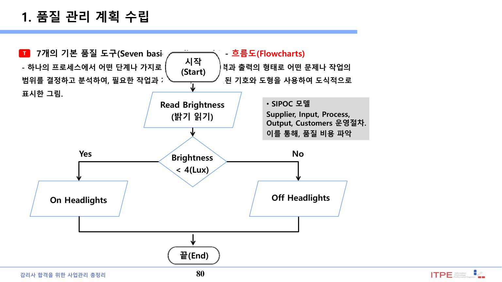
| 도구 | 용도 |
|---|---|
| 파레토 차트 | 결함 원인 빈도순 정렬, 80/20로 핵심 원인 식별 |
| 특성요인도(이시카와/피시본) | 결과(문제)의 원인을 계통 분석(원인-결과도) |
| 관리도(Control Chart) | 프로세스 통제 상태 감시(UCL/LCL, 7 Run Rule) |
| 히스토그램 | 데이터 분포·빈도 표현 |
| 산점도(Scatter) | 두 변수 간 상관관계 분석 |
| 체크시트(체크리스트) | 데이터 수집·집계 점검표 |
| 흐름도(Flowchart) | 프로세스 단계·흐름 표현 |
12. 품질보증 수행(Manage Quality) · 관리통제 7도구 · 감사 ★★
계획을 실행 가능한 활동으로 전환하고 프로세스를 개선한다. 대표 도구가 품질 관리·통제 7도구와 품질 감사다.
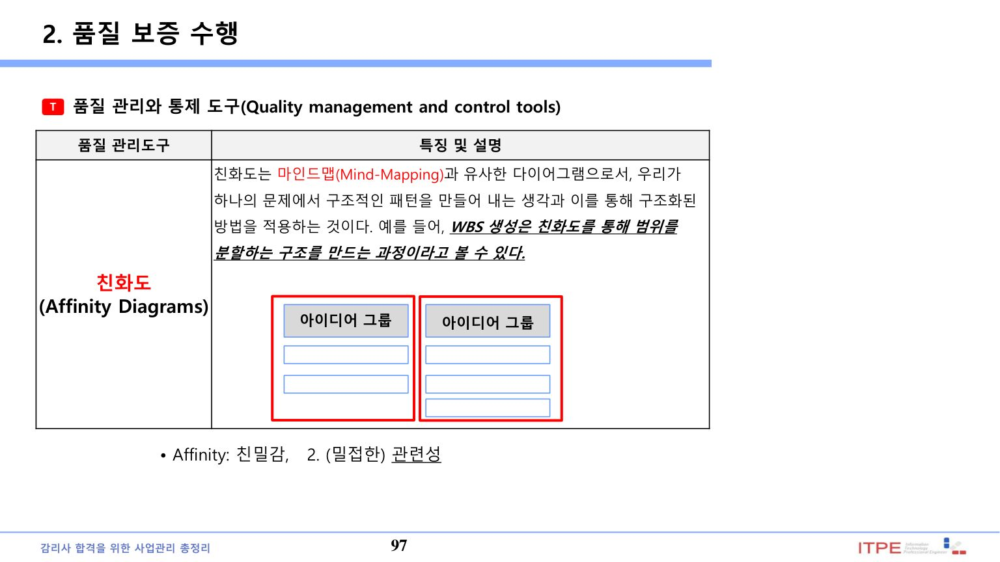
| 관리·통제 7도구 | 용도 |
|---|---|
| 친화도(Affinity Diagram) | 아이디어를 유사끼리 그룹화(마인드맵 유사, WBS 생성에도 활용) |
| 프로세스 결정 프로그램 차트(PDPC) | 목표 달성 과정의 위험·대응 시나리오를 예측 |
| 상호관계도(Interrelationship) | 복잡한 인과관계를 도식화 |
| 트리(나뭇가지) 다이어그램 | 계층적 분할(WBS·RBS·OBS) |
| 우선순위 매트릭스 | 기준을 만들어 주요 이슈의 우선순위 결정 |
| 활동 네트워크 다이어그램 | 활동 순서·일정 흐름 표현 |
| 매트릭스 다이어그램 | 행·열 인자 간 원인·결과 관계 분석 |
품질 감사(Quality Audits) ★
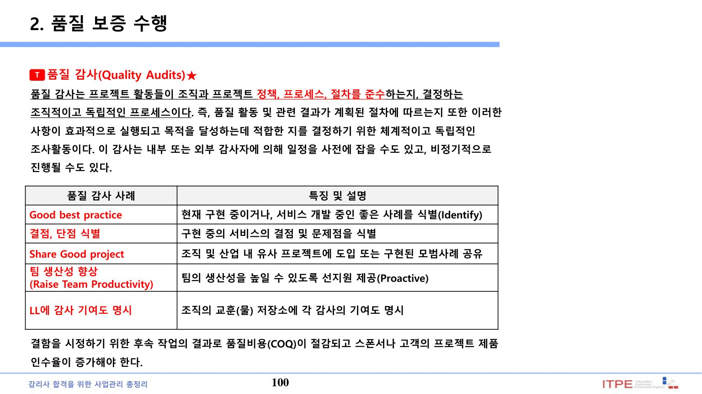
프로젝트 활동이 조직·프로젝트 정책·프로세스·절차를 준수하는지 결정하는 조사활동. 내부·외부 감사자가 정기/비정기로 수행하며, 각 감사 기여도를 조직 교훈(LL) 저장소에 명시한다.
▸ 원본 p.96 표 복원: 품질 보증 수행(Perform Quality Assurance) ITO
| 입력물(Input) | 도구 및 기법(Tool & Technique) | 산출물(Output) |
|---|---|---|
| 품질 관리 계획서 (Quality management plan) 프로세스 개선 계획서 (Process improvement Plan) 품질 지표(Quality metrics) 품질 통제 측정치 (Quality control Measurements) 프로젝트 문서 (Project documents) | 품질 관리와 통제 도구 (Quality management and control tools) 품질 감사★ (Quality audits) 프로세스 분석 (Process Analysis) | 변경 요청서 (Change requests) 프로젝트 관리 계획서 갱신 (Project management plan Updates) 프로젝트 문서 갱신 (Project documents updates) 조직 프로세스 자산 갱신 (OPA updates) |
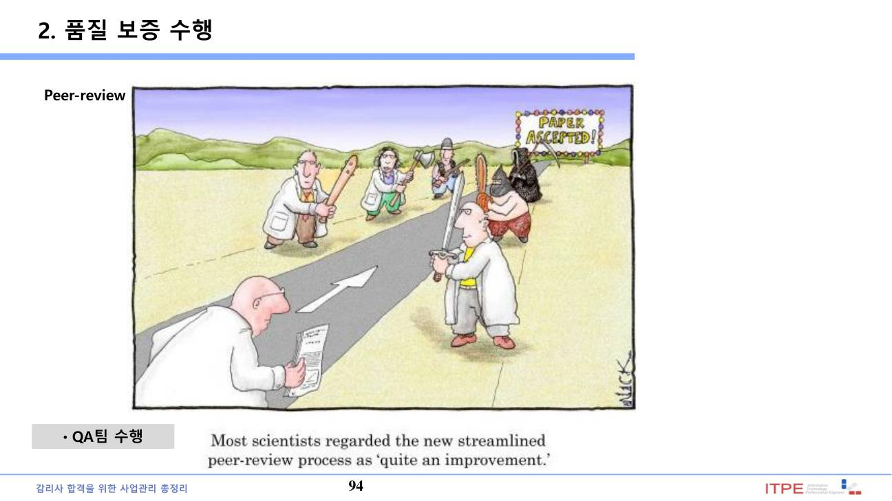
13. 품질 통제(Control Quality) · 검사 · PDCA
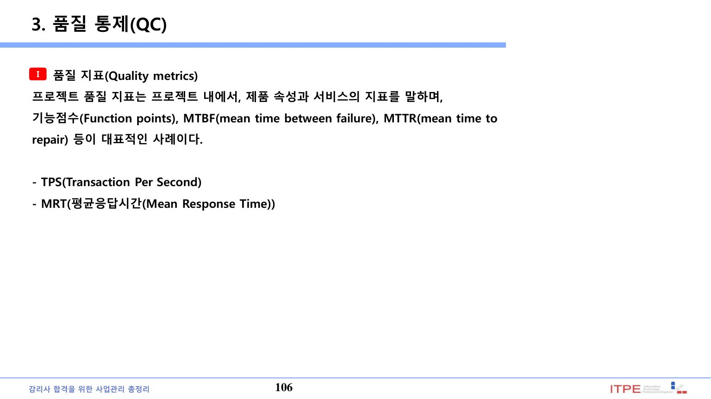
| 구분 | 내용 |
|---|---|
| 품질 지표(Quality Metrics) | 제품 속성·서비스의 측정 지표(결함밀도·MTBF 등) |
| 검사(Inspection) | 작업 산출물이 문서화된 기준에 부합하는지 측정. 산출물=검증된 인도물 |
| Peer Review | 동료검토·워크스루·인스펙션 – 설계서·코드 등 중간 산출물의 결함 조기 발견 |
▸ 원본 p.105 표 복원: 품질 통제(Control Quality) ITO
| 입력물(Input) | 도구 및 기법(Tool & Technique) | 산출물(Output) |
|---|---|---|
| 프로젝트관리 계획서 (Project management plan) 품질 지표(Quality metrics) 품질 체크리스트 (Quality checklists) 작업 성과 자료 (Work performance data) 승인된 변경 요청 (Approved change Requests) 인도물(Deliverables) 프로젝트 문서 조직 프로세스 자산 | 7개의 기본 품질 도구 (Seven basic quality tools) 통계적 표본추출 (Statistical sampling) 검사(Inspection) ★ 승인된 변경 요청(서) 검토 (Approved change requests review) | 품질 통제 측정치 (Quality control measurements) 확인된 변경(Validated changes) 검증된 인도물★ (Verified deliverables) 작업 성과 정보 (Work performance Information) 변경 요청(Change requests) 품질관리계획서 갱신 (Quality management plan updates) 프로젝트 문서 갱신 조직프로세스자산 갱신 |
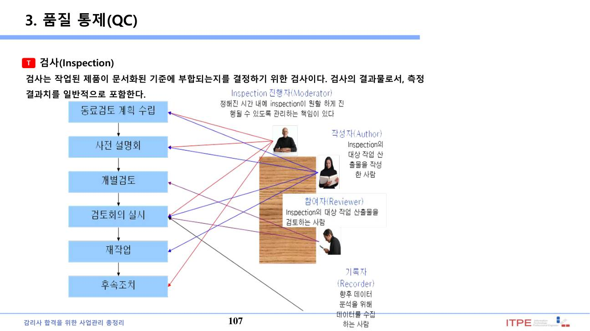
📚 전체 기출·예상문제 (16문항) — 원문 수록
본 강좌 원본 PDF에 수록된 기출·예상문제를 빠짐없이 원문 그대로 정리했습니다. 정답·해설은 강의 원문 기준입니다.